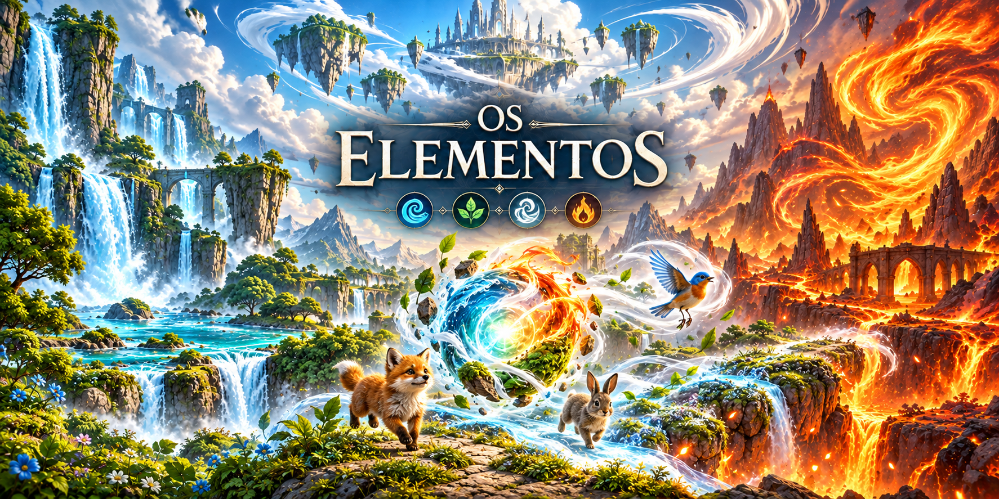

NATUREZA · TRANSFORMAÇÃO · DESCOBERTAUma pequena esfera.
Conheça a jornada ↓Uma pequena esfera.
Um mundo para reconstruir.
● EM DESENVOLVIMENTOA natureza guia.
A natureza guia.
Você transforma.
Em um mundo destruído, uma esfera assume as propriedades da água, do fogo, da terra e do ar para cumprir missões, salvar animais e reconstruir o que foi perdido. Cada transformação abre novas possibilidades para avançar nessa jornada.
Em um mundo sem seres humanos, os quatro elementos são a força para resgatar a vida e reconstruir o mundo.
Faça parte dessa jornada ↗A jornada está
apenas começando.
Os Elementos está em desenvolvimento.
Entre na lista de espera e acompanhe o próximo passo.